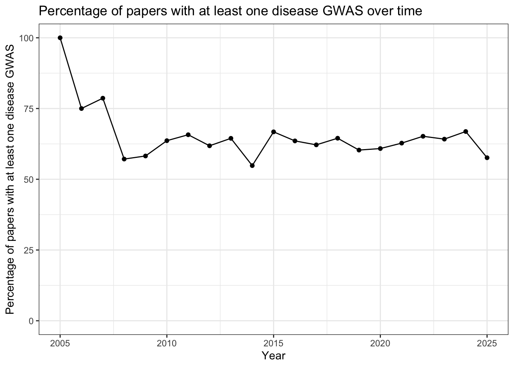

Last updated: 2025-12-29
Checks: 7 0
Knit directory:
genomics_ancest_disease_dispar/
This reproducible R Markdown analysis was created with workflowr (version 1.7.1). The Checks tab describes the reproducibility checks that were applied when the results were created. The Past versions tab lists the development history.
Great! Since the R Markdown file has been committed to the Git repository, you know the exact version of the code that produced these results.
Great job! The global environment was empty. Objects defined in the global environment can affect the analysis in your R Markdown file in unknown ways. For reproduciblity it’s best to always run the code in an empty environment.
The command set.seed(20220216) was run prior to running
the code in the R Markdown file. Setting a seed ensures that any results
that rely on randomness, e.g. subsampling or permutations, are
reproducible.
Great job! Recording the operating system, R version, and package versions is critical for reproducibility.
Nice! There were no cached chunks for this analysis, so you can be confident that you successfully produced the results during this run.
Great job! Using relative paths to the files within your workflowr project makes it easier to run your code on other machines.
Great! You are using Git for version control. Tracking code development and connecting the code version to the results is critical for reproducibility.
The results in this page were generated with repository version f1b9ff4. See the Past versions tab to see a history of the changes made to the R Markdown and HTML files.
Note that you need to be careful to ensure that all relevant files for
the analysis have been committed to Git prior to generating the results
(you can use wflow_publish or
wflow_git_commit). workflowr only checks the R Markdown
file, but you know if there are other scripts or data files that it
depends on. Below is the status of the Git repository when the results
were generated:
Ignored files:
Ignored: .DS_Store
Ignored: .Rproj.user/
Ignored: .venv/
Ignored: analysis/.DS_Store
Ignored: ancestry_dispar_env/
Ignored: data/.DS_Store
Ignored: data/cohort/
Ignored: data/gbd/.DS_Store
Ignored: data/gbd/IHME-GBD_2021_DATA-d8cf695e-1.csv
Ignored: data/gbd/IHME-GBD_2023_DATA-73cc01fd-1.csv
Ignored: data/gbd/ihme_gbd_2019_global_disease_burden_rate_all_ages.csv
Ignored: data/gbd/ihme_gbd_2019_global_paf_rate_percent_all_ages.csv
Ignored: data/gbd/ihme_gbd_2021_global_disease_burden_rate_all_ages.csv
Ignored: data/gbd/ihme_gbd_2021_global_paf_rate_percent_all_ages.csv
Ignored: data/gwas_catalog/
Ignored: data/icd/.DS_Store
Ignored: data/icd/IHME_GBD_2019_COD_CAUSE_ICD_CODE_MAP_Y2020M10D15.XLSX
Ignored: data/icd/IHME_GBD_2019_NONFATAL_CAUSE_ICD_CODE_MAP_Y2020M10D15.XLSX
Ignored: data/icd/IHME_GBD_2021_COD_CAUSE_ICD_CODE_MAP_Y2024M05D16.XLSX
Ignored: data/icd/IHME_GBD_2021_NONFATAL_CAUSE_ICD_CODE_MAP_Y2024M05D16.XLSX
Ignored: data/icd/UK_Biobank_master_file.tsv
Ignored: data/icd/cdc_valid_icd10_Sep_23_2025.xlsx
Ignored: data/icd/cdc_valid_icd9_Sep_23_2025.xlsx
Ignored: data/icd/hp_umls_mapping.csv
Ignored: data/icd/lancet_conditions_icd10.xlsx
Ignored: data/icd/manual_disease_icd10_mappings.xlsx
Ignored: data/icd/mondo_umls_mapping.csv
Ignored: data/icd/phecode_international_version_unrolled.csv
Ignored: data/icd/phecode_to_icd10_manual_mapping.xlsx
Ignored: data/icd/semiautomatic_ICD-pheno.txt
Ignored: data/icd/semiautomatic_ICD-pheno_UKB_subset.txt
Ignored: human_dictionary/
Ignored: igsr_populations.tsv
Ignored: output/.DS_Store
Ignored: output/abstracts/
Ignored: output/doccano/
Ignored: output/fulltexts/
Ignored: output/gwas_cat/
Ignored: output/gwas_cohorts/
Ignored: output/icd_map/
Ignored: output/trait_ontology/
Ignored: pubmedbert-cohort-ner-model/
Ignored: pubmedbert-cohort-ner/
Ignored: r-spacyr/
Ignored: renv/
Ignored: venv/
Untracked files:
Untracked: code/extract_cdc_meta.R
Untracked: code/figure_4a.R
Untracked: code/poster_figures.R
Untracked: code/umls_ontology.R
Untracked: data/cdc/
Untracked: data/icd/2025AA/
Untracked: data/icd/umls-2025AA-mrconso.zip
Untracked: figures/
Untracked: visualization.Rdata
Unstaged changes:
Modified: analysis/disease_inves_by_ancest.Rmd
Modified: analysis/get_full_text.Rmd
Modified: analysis/group_cancer_diseases.Rmd
Modified: analysis/gwas_to_gbd.Rmd
Modified: analysis/index.Rmd
Modified: analysis/level_1_disease_group_non_cancer.Rmd
Modified: analysis/level_2_disease_group.Rmd
Modified: analysis/manual_trait_map_icd10.Rmd
Modified: analysis/map_trait_to_icd10.Rmd
Modified: analysis/missing_cohort_info.Rmd
Modified: analysis/replication_ancestry_bias.Rmd
Modified: analysis/text_for_cohort_labels.Rmd
Modified: code/custom_plotting.R
Note that any generated files, e.g. HTML, png, CSS, etc., are not included in this status report because it is ok for generated content to have uncommitted changes.
These are the previous versions of the repository in which changes were
made to the R Markdown
(analysis/trait_ontology_categorization.Rmd) and HTML
(docs/trait_ontology_categorization.html) files. If you’ve
configured a remote Git repository (see ?wflow_git_remote),
click on the hyperlinks in the table below to view the files as they
were in that past version.
| File | Version | Author | Date | Message |
|---|---|---|---|---|
| Rmd | f1b9ff4 | IJbeasley | 2025-12-29 | Updating identifying disease studies step |
| html | 5e4dc04 | IJbeasley | 2025-09-14 | Build site. |
| Rmd | 6846cca | IJbeasley | 2025-09-14 | Fixing typos on intital trait categorization .. again |
| html | cba6936 | IJbeasley | 2025-09-14 | Build site. |
| Rmd | 14b700b | IJbeasley | 2025-09-14 | Fixing typos on intital trait categorization |
| html | 6a8f9cc | IJbeasley | 2025-09-10 | Build site. |
| Rmd | 63bd79a | IJbeasley | 2025-09-10 | Update cancer grouping |
| html | 2853e61 | IJbeasley | 2025-09-10 | Build site. |
| Rmd | a7e2f7c | IJbeasley | 2025-09-10 | Fixing / re-formatting of initial trait categorization |
knitr::opts_chunk$set(echo = TRUE,
message = FALSE,
warning = FALSE
)
library(data.table)
library(dplyr)
library(ggplot2)
library(stringr)gwas_study_info <- fread(here::here("data/gwas_catalog/gwas-catalog-v1.0.3.1-studies-r2025-07-21.tsv"))
gwas_study_info =
gwas_study_info |>
rename_all(~gsub(" ", "_", .x))
gwas_study_info <-
gwas_study_info |>
mutate(MAPPED_TRAIT = tolower(MAPPED_TRAIT),
MAPPED_BACKGROUND_TRAIT = tolower(MAPPED_BACKGROUND_TRAIT)
)
gwas_study_info <-
gwas_study_info |>
mutate(YEAR = lubridate::year(DATE))# some traits are not mapped:
print("Before fixing, how many unmapped traits are there?")[1] "Before fixing, how many unmapped traits are there?"gwas_study_info |>
filter(is.na(MAPPED_TRAIT) | MAPPED_TRAIT == "") |>
nrow()[1] 17# by Zoom, Anomalous atrioventricular excitation
# -> Anomalous atrioventricular excitation (disorder)
# http://snomed.info/id/17869006
unmapped_traits <-
data.frame("DISEASE/TRAIT" = "Anomalous atrioventricular excitation (PheCode 426.4)",
MAPPED_TRAIT = "anomalous atrioventricular excitation (disorder)",
MAPPED_TRAIT_URI = "http://snomed.info/id/17869006",
stringsAsFactors = FALSE
) |>
rename(`DISEASE/TRAIT` = "DISEASE.TRAIT")
# by Zooma, Pilocytic astrocytoma -> MONDO_0016691 (http://purl.obolibrary.org/obo/MONDO_0016691)
unmapped_traits <-
unmapped_traits |>
add_row(`DISEASE/TRAIT` = "Pilocytic astrocytoma",
MAPPED_TRAIT = "pilocytic astrocytoma",
MAPPED_TRAIT_URI = "http://purl.obolibrary.org/obo/MONDO_0016691"
)
# by Zooma, Pilocytic astrocytoma and optic pathway glioma
# -> http://purl.obolibrary.org/obo/MONDO_0016167, http://purl.obolibrary.org/obo/MONDO_0016691
unmapped_traits =
unmapped_traits |>
add_row(`DISEASE/TRAIT` = "Pilocytic astrocytoma and optic pathway glioma",
MAPPED_TRAIT = "optic pathway glioma, pilocytic astrocytoma",
MAPPED_TRAIT_URI = "http://purl.obolibrary.org/obo/MONDO_0016167, http://purl.obolibrary.org/obo/MONDO_0016691"
)
# by searching ontology lookup service:
# Leukotriene levels (480.2454_0.351) & Leukotriene levels (337.1632_0.339)
# -> Fatty Acid Measurement
# http://purl.obolibrary.org/obo/NCIT_C80157
unmapped_traits =
unmapped_traits |>
add_row(`DISEASE/TRAIT` = c("Leukotriene levels (480.2454_0.351)",
"Leukotriene levels (337.1632_0.339)"
),
MAPPED_TRAIT = c("fatty acid measurement",
"fatty acid measurement"
),
MAPPED_TRAIT_URI = c("http://purl.obolibrary.org/obo/NCIT_C80157",
"http://purl.obolibrary.org/obo/NCIT_C80157"
)
)
# by searching ontology lookup service:
# X-11244 levels
# X-11255 levels
# to be mapped to: http://www.ebi.ac.uk/efo/EFO_0004725
# metabolite measurement
unmapped_traits =
unmapped_traits |>
add_row(`DISEASE/TRAIT` = c("X-11244 levels",
"X-11255 levels"
),
MAPPED_TRAIT = c("metabolite measurement",
"metabolite measurement"
),
MAPPED_TRAIT_URI = c("http://www.ebi.ac.uk/efo/EFO_0004725",
"http://www.ebi.ac.uk/efo/EFO_0004725"
)
)
# by searching ontology lookup service:
# N-acetylornithine levels, & N-acetylornithine levels in chronic kidney disease
# to be mapped to http://www.ebi.ac.uk/efo/EFO_0021538
# N-acetylornithine measurement
unmapped_traits =
unmapped_traits |>
add_row(`DISEASE/TRAIT` = c("N-acetylornithine levels",
"N-acetylornithine levels in chronic kidney disease"
),
MAPPED_TRAIT = c("n-acetylornithine measurement",
"n-acetylornithine measurement"
),
MAPPED_TRAIT_URI = c("http://www.ebi.ac.uk/efo/EFO_0021538",
"http://www.ebi.ac.uk/efo/EFO_0021538"
)
)
# by searching ontology lookup service:
# Scleritis and episcleritis (PheCode 379.1)
# map to: Scleritis and episcleritis (disorder)
# http://snomed.info/id/267659002
unmapped_traits =
unmapped_traits |>
add_row(`DISEASE/TRAIT` = "Scleritis and episcleritis (PheCode 379.1)",
MAPPED_TRAIT = "scleritis and episcleritis (disorder)",
MAPPED_TRAIT_URI = "http://snomed.info/id/267659002"
)
gwas_study_info =
gwas_study_info |>
mutate(MAPPED_TRAIT = ifelse(MAPPED_TRAIT == "",
NA,
MAPPED_TRAIT))
gwas_study_info =
gwas_study_info |>
rows_patch(unmapped_traits,
by = c("DISEASE/TRAIT"),
unmatched = "ignore"
)
# yay all mapped now
print("After fixing, how many unmapped traits remain?")[1] "After fixing, how many unmapped traits remain?"gwas_study_info |>
filter(is.na(MAPPED_TRAIT) | MAPPED_TRAIT == "") |>
nrow()[1] 0# Periodontal disease related phenotype
# set trait to periodontal disorder
# rather than periodontal measurement
gwas_study_info =
gwas_study_info |>
mutate(MAPPED_TRAIT = ifelse(grepl("Periodontal disease related phenotype", `DISEASE/TRAIT`),
str_replace_all(pattern = "periodontal measurement",
replacement = "periodontal disorder",
MAPPED_TRAIT
),
MAPPED_TRAIT)
) |>
mutate(MAPPED_TRAIT_URI = ifelse(grepl("Periodontal disease related phenotype", `DISEASE/TRAIT`),
str_replace_all(pattern = "http://www.ebi.ac.uk/efo/EFO_0007780",
replacement = "http://purl.obolibrary.org/obo/MONDO_0002635",
MAPPED_TRAIT_URI
),
MAPPED_TRAIT_URI)
)
# DISEASE/TRAIT == "Spontaneous preterm birth (preterm delivery)"
# MAPPED_TRAIT == "delivery measurement"
# MAPPED_TRAIT_URI == http://www.ebi.ac.uk/efo/EFO_0006922
# make MAPPED_TRAIT to "premature birth"
# MAPPED_TRAIT_URI to http://www.ebi.ac.uk/efo/EFO_0003917
gwas_study_info =
gwas_study_info |>
mutate(MAPPED_TRAIT = ifelse(grepl("Spontaneous preterm birth \\(preterm delivery\\)",
`DISEASE/TRAIT`) &
MAPPED_TRAIT == "delivery measurement",
"premature birth",
MAPPED_TRAIT)
) |>
mutate(MAPPED_TRAIT_URI = ifelse(grepl("Spontaneous preterm birth \\(preterm delivery\\)", `DISEASE/TRAIT`) &
MAPPED_TRAIT_URI == "http://www.ebi.ac.uk/efo/EFO_0006922",
"http://www.ebi.ac.uk/efo/EFO_0003917",
MAPPED_TRAIT_URI)
)
## DISEASE/TRAIT == "Sporadic miscarriage"
## MAPPED_TRAIT == "fertility trait"
## MAPPED_TRAIT_URI == "http://purl.obolibrary.org/obo/OBA_VT0010464"
# make MAPPED_TRAIT to "spontaneous abortion"
# MAPPED_TRAIT_URI to "http://www.ebi.ac.uk/efo/EFO_1001255"
gwas_study_info =
gwas_study_info |>
mutate(MAPPED_TRAIT = ifelse(grepl("Sporadic miscarriage", `DISEASE/TRAIT`) &
MAPPED_TRAIT == "fertility trait",
"spontaneous abortion",
MAPPED_TRAIT)
) |>
mutate(MAPPED_TRAIT_URI = ifelse(grepl("Sporadic miscarriage", `DISEASE/TRAIT`) &
MAPPED_TRAIT_URI == "http://purl.obolibrary.org/obo/OBA_VT0010464",
"http://www.ebi.ac.uk/efo/EFO_1001255",
MAPPED_TRAIT_URI)
)
# Multiple consecutive miscarriage
## MAPPED_TRAIT == "fertility trait"
## MAPPED_TRAIT_URI == "http://purl.obolibrary.org/obo/OBA_VT0010464"
# make MAPPED_TRAIT to "spontaneous abortion"
# MAPPED_TRAIT_URI to "http://www.ebi.ac.uk/efo/EFO_1001255"
gwas_study_info =
gwas_study_info |>
mutate(MAPPED_TRAIT = ifelse(grepl("Multiple consecutive miscarriage", `DISEASE/TRAIT`) &
MAPPED_TRAIT == "fertility trait",
"spontaneous abortion",
MAPPED_TRAIT)
) |>
mutate(MAPPED_TRAIT_URI = ifelse(grepl("Multiple consecutive miscarriage", `DISEASE/TRAIT`) &
MAPPED_TRAIT_URI == "http://purl.obolibrary.org/obo/OBA_VT0010464",
"http://www.ebi.ac.uk/efo/EFO_1001255",
MAPPED_TRAIT_URI)
)
## DISEASE/TRAIT == "Post-term birth"
## MAPPED_TRAIT == "gestational age"
## MAPPED_TRAIT_URI == "http://www.ebi.ac.uk/efo/EFO_0005112"
# make MAPPED_TRAIT to "post term pregnancy"
# MAPPED_TRAIT_URI to "http://www.ebi.ac.uk/efo/EFO_0009681"
gwas_study_info =
gwas_study_info |>
mutate(MAPPED_TRAIT = ifelse(grepl("Post-term birth", `DISEASE/TRAIT`) &
MAPPED_TRAIT == "gestational age",
"post term pregnancy",
MAPPED_TRAIT)
) |>
mutate(MAPPED_TRAIT_URI = ifelse(grepl("Post-term birth", `DISEASE/TRAIT`) &
MAPPED_TRAIT_URI == "http://www.ebi.ac.uk/efo/EFO_0005112",
"http://www.ebi.ac.uk/efo/EFO_0009681",
MAPPED_TRAIT_URI)
)# for MAPPED_TRAIT contains "sars-cov-2"
# set background trait to covid-19
gwas_study_info =
gwas_study_info |>
mutate(MAPPED_BACKGROUND_TRAIT = ifelse(grepl("sars-cov-2", MAPPED_TRAIT),
"covid-19",
MAPPED_BACKGROUND_TRAIT)
) |>
mutate(MAPPED_BACKGROUND_TRAIT_URI = ifelse(grepl("sars-cov-2", MAPPED_TRAIT),
"http://purl.obolibrary.org/obo/MONDO_0100096",
MAPPED_BACKGROUND_TRAIT_URI)
)
# for pubmed id: 32247823
# set background trait to non-alcoholic steatohepatitis
# and background trait uri to EFO_1001249
gwas_study_info =
gwas_study_info |>
mutate(MAPPED_BACKGROUND_TRAIT = ifelse(PUBMED_ID == 32247823,
"non-alcoholic steatohepatitis",
MAPPED_BACKGROUND_TRAIT)
) |>
mutate(MAPPED_BACKGROUND_TRAIT_URI = ifelse(PUBMED_ID == 32247823,
"http://www.ebi.ac.uk/efo/EFO_1001249",
MAPPED_BACKGROUND_TRAIT_URI)
)
# Exploratory eye movement dysfunction in schizophrenia
# set background trait to schizophrenia
gwas_study_info =
gwas_study_info |>
mutate(MAPPED_BACKGROUND_TRAIT = ifelse(grepl("Exploratory eye movement dysfunction in schizophrenia", `DISEASE/TRAIT`),
"schizophrenia",
MAPPED_BACKGROUND_TRAIT)
) |>
mutate(MAPPED_BACKGROUND_TRAIT_URI = ifelse(grepl("Exploratory eye movement dysfunction in schizophrenia", `DISEASE/TRAIT`),
"http://purl.obolibrary.org/obo/MONDO_0005090",
MAPPED_BACKGROUND_TRAIT_URI)
)
# for pubmed_id: 21107309
# set background trait to schizophrenia
gwas_study_info =
gwas_study_info |>
mutate(MAPPED_BACKGROUND_TRAIT = ifelse(PUBMED_ID == 21107309,
"schizophrenia",
MAPPED_BACKGROUND_TRAIT)
) |>
mutate(MAPPED_BACKGROUND_TRAIT_URI = ifelse(PUBMED_ID == 21107309,
"http://purl.obolibrary.org/obo/MONDO_0005090",
MAPPED_BACKGROUND_TRAIT_URI)
)
# if `DISEASE/TRAIT` contains Adverse response to chemotherapy in breast cancer
# set MAPPED_BACKGROUND_TRAIT to breast cancer
# http://purl.obolibrary.org/obo/MONDO_0007254
gwas_study_info =
gwas_study_info |>
mutate(MAPPED_BACKGROUND_TRAIT = ifelse(grepl("Adverse response to chemotherapy in breast cancer", `DISEASE/TRAIT`),
"breast cancer",
MAPPED_BACKGROUND_TRAIT)
) |>
mutate(MAPPED_BACKGROUND_TRAIT_URI = ifelse(grepl("Adverse response to chemotherapy in breast cancer", `DISEASE/TRAIT`),
"http://purl.obolibrary.org/obo/MONDO_0007254",
MAPPED_BACKGROUND_TRAIT_URI)
)
# for pubmed id: 30188897
# and DISEASE/TRAIT contains "miscarriages"
# add spontaneous abortion, http://www.ebi.ac.uk/efo/EFO_1001255
# as MAPPED_BACKGROUND_TRAIT
gwas_study_info =
gwas_study_info |>
mutate(MAPPED_BACKGROUND_TRAIT = ifelse(PUBMED_ID == 30188897 &
grepl("miscarriage", `DISEASE/TRAIT`),
"spontaneous abortion",
MAPPED_BACKGROUND_TRAIT)
) |>
mutate(MAPPED_BACKGROUND_TRAIT_URI = ifelse(PUBMED_ID == 30188897 &
grepl("miscarriage", `DISEASE/TRAIT`),
"http://www.ebi.ac.uk/efo/EFO_1001255",
MAPPED_BACKGROUND_TRAIT_URI)
)
# for pubmed id: 30188897
# and DISEASE/TRAIT contains "stillbirth"
# add stillbirth, http://purl.obolibrary.org/obo/NCIT_C49151
# as MAPPED_BACKGROUND_TRAIT
gwas_study_info =
gwas_study_info |>
mutate(MAPPED_BACKGROUND_TRAIT = ifelse(PUBMED_ID == 30188897 &
grepl("stillbirth", `DISEASE/TRAIT`),
"stillbirth",
MAPPED_BACKGROUND_TRAIT)
) |>
mutate(MAPPED_BACKGROUND_TRAIT_URI = ifelse(PUBMED_ID == 30188897 &
grepl("stillbirth", `DISEASE/TRAIT`),
"http://purl.obolibrary.org/obo/NCIT_C49151",
MAPPED_BACKGROUND_TRAIT_URI)
)
# if MAPPED_TRAIT == "response to covid-19 vaccine"
# set MAPPED_BACKGROUND_TRAIT to covid-19
gwas_study_info =
gwas_study_info |>
mutate(MAPPED_BACKGROUND_TRAIT = ifelse(MAPPED_TRAIT == "response to covid-19 vaccine",
"covid-19",
MAPPED_BACKGROUND_TRAIT)
) |>
mutate(MAPPED_BACKGROUND_TRAIT_URI = ifelse(MAPPED_TRAIT == "response to covid-19 vaccine",
"http://purl.obolibrary.org/obo/MONDO_0100096",
MAPPED_BACKGROUND_TRAIT_URI)
)
# if MAPPED_TRAIT == "response to vaccine"
# and DISEASE/TRAIT contains "smallpox"
# set MAPPED_BACKGROUND_TRAIT to smallpox
gwas_study_info =
gwas_study_info |>
mutate(MAPPED_BACKGROUND_TRAIT = ifelse(MAPPED_TRAIT == "response to vaccine" &
grepl("smallpox", `DISEASE/TRAIT`),
"smallpox",
MAPPED_BACKGROUND_TRAIT)
) |>
mutate(MAPPED_BACKGROUND_TRAIT_URI = ifelse(MAPPED_TRAIT == "response to vaccine" &
grepl("smallpox", `DISEASE/TRAIT`),
"http://purl.obolibrary.org/obo/DOID_8736",
MAPPED_BACKGROUND_TRAIT_URI)
)
# if MAPPED_TRAIT == "response to vaccine"
# and DISEASE/TRAIT contains "influenza"
# set MAPPED_BACKGROUND_TRAIT to influenza
gwas_study_info =
gwas_study_info |>
mutate(MAPPED_BACKGROUND_TRAIT = ifelse(MAPPED_TRAIT == "response to vaccine" &
grepl("influenza", `DISEASE/TRAIT`),
"influenza",
MAPPED_BACKGROUND_TRAIT)
) |>
mutate(MAPPED_BACKGROUND_TRAIT_URI = ifelse(MAPPED_TRAIT == "response to vaccine" &
grepl("influenza", `DISEASE/TRAIT`),
"http://www.ebi.ac.uk/efo/EFO_0007328",
MAPPED_BACKGROUND_TRAIT_URI)
)
# if. MAPPED_TRAIT == "response to vaccine"
# and DISEASE/TRAIT contains "hepatitis B"
# set MAPPED_BACKGROUND_TRAIT to hepatitis B
gwas_study_info =
gwas_study_info |>
mutate(MAPPED_BACKGROUND_TRAIT = ifelse(MAPPED_TRAIT == "response to vaccine" &
grepl("hepatitis B|Hepatitis B", `DISEASE/TRAIT`),
"hepatitis b",
MAPPED_BACKGROUND_TRAIT)
) |>
mutate(MAPPED_BACKGROUND_TRAIT_URI = ifelse(MAPPED_TRAIT == "response to vaccine" &
grepl("hepatitis B|Hepatitis B", `DISEASE/TRAIT`),
"http://purl.obolibrary.org/obo/DOID_2043",
MAPPED_BACKGROUND_TRAIT_URI)
)
# if MAPPED_TRAIT == "response to covid-19 vaccine"
# and MAPPED_BACKGROUND_TRAIT == ""
gwas_study_info =
gwas_study_info |>
mutate(MAPPED_BACKGROUND_TRAIT = ifelse(MAPPED_TRAIT == "response to covid-19 vaccine" &
(is.na(MAPPED_BACKGROUND_TRAIT) | MAPPED_BACKGROUND_TRAIT == ""),
"covid-19",
MAPPED_BACKGROUND_TRAIT)
) |>
mutate(MAPPED_BACKGROUND_TRAIT_URI = ifelse(MAPPED_TRAIT == "response to covid-19 vaccine" &
(is.na(MAPPED_BACKGROUND_TRAIT_URI) | MAPPED_BACKGROUND_TRAIT_URI == ""),
"http://purl.obolibrary.org/obo/MONDO_0100096",
MAPPED_BACKGROUND_TRAIT_URI)
)
# if MAPPED_TRAIT == "response to vaccine"
# and MAPPED_BACKGROUND_TRAIT == ""
# and DISEASE/TRAIT contains "Immune response to smallpox"
# set MAPPED_BACKGROUND_TRAIT to smallpox
gwas_study_info =
gwas_study_info |>
mutate(MAPPED_BACKGROUND_TRAIT = ifelse(MAPPED_TRAIT == "response to vaccine" &
(is.na(MAPPED_BACKGROUND_TRAIT) | MAPPED_BACKGROUND_TRAIT == "") &
grepl("Immune response to smallpox", `DISEASE/TRAIT`),
"smallpox",
MAPPED_BACKGROUND_TRAIT)
) |>
mutate(MAPPED_BACKGROUND_TRAIT_URI = ifelse(MAPPED_TRAIT == "response to vaccine" &
(is.na(MAPPED_BACKGROUND_TRAIT_URI) | MAPPED_BACKGROUND_TRAIT_URI == "") &
grepl("Immune response to smallpox", `DISEASE/TRAIT`),
"http://purl.obolibrary.org/obo/OMIT_0013787",
MAPPED_BACKGROUND_TRAIT_URI)
)
# if MAPPED_TRAIT == "response to vaccine"
# and MAPPED_BACKGROUND_TRAIT == ""
# and DISEASE/TRAIT contains "Immune response to measles vaccine"
gwas_study_info =
gwas_study_info |>
mutate(MAPPED_BACKGROUND_TRAIT = ifelse(MAPPED_TRAIT == "response to vaccine" &
(is.na(MAPPED_BACKGROUND_TRAIT) | MAPPED_BACKGROUND_TRAIT == "") &
grepl("Immune response to measles vaccine", `DISEASE/TRAIT`),
"measles",
MAPPED_BACKGROUND_TRAIT)
) |>
mutate(MAPPED_BACKGROUND_TRAIT_URI = ifelse(MAPPED_TRAIT == "response to vaccine" &
(is.na(MAPPED_BACKGROUND_TRAIT_URI) | MAPPED_BACKGROUND_TRAIT_URI == "") &
grepl("Immune response to measles vaccine", `DISEASE/TRAIT`),
"http://purl.obolibrary.org/obo/DOID_8622",
MAPPED_BACKGROUND_TRAIT_URI)
)To ensure splitting MAPPED_TERM column by commas would split distinct traits
# in MAPPED_BACKGROUND_TRAIT, replace commas with "*" in:
# migraine without aura, susceptibility to, 4
gwas_study_info =
gwas_study_info |>
mutate(MAPPED_BACKGROUND_TRAIT = ifelse(grepl("migraine without aura, susceptibility to, 4", MAPPED_BACKGROUND_TRAIT),
stringr::str_replace_all(MAPPED_BACKGROUND_TRAIT,
pattern = "migraine without aura, susceptibility to, 4",
"migraine without aura* susceptibility to* 4"),
MAPPED_BACKGROUND_TRAIT)
)
# in MAPPED_TRAIT, replace commas with "*" in:
# migraine without aura, susceptibility to, 4
gwas_study_info =
gwas_study_info |>
mutate(MAPPED_TRAIT = ifelse(grepl("migraine without aura, susceptibility to, 4", MAPPED_TRAIT),
stringr::str_replace_all(MAPPED_TRAIT,
pattern = "migraine without aura, susceptibility to, 4",
"migraine without aura* susceptibility to* 4"),
MAPPED_TRAIT)
)
# Other MAPPED_TRAIT fixes
gwas_study_info =
gwas_study_info |>
mutate(MAPPED_TRAIT = case_when(
# osteoarthritis, hip ... http://www.ebi.ac.uk/efo/EFO_1000786
grepl("EFO_1000786", MAPPED_TRAIT_URI) ~ stringr::str_replace_all(MAPPED_TRAIT,
pattern = "osteoarthritis, hip",
"osteoarthritis* hip"),
# osteoarthritis, hand ... http://www.ebi.ac.uk/efo/EFO_1000789
grepl("EFO_1000789", MAPPED_TRAIT_URI) ~ stringr::str_replace_all(MAPPED_TRAIT,
pattern = "osteoarthritis, hand",
"osteoarthritis* hand"
),
# osteoarthritis, knee ... http://www.ebi.ac.uk/efo/EFO_0004616
grepl("EFO_0004616", MAPPED_TRAIT_URI) ~ stringr::str_replace_all(MAPPED_TRAIT,
pattern = "osteoarthritis, knee",
"osteoarthritis* knee"),
# osteoarthritis, spine ... http://www.ebi.ac.uk/efo/EFO_1000787
grepl("EFO_1000787", MAPPED_TRAIT_URI) ~ stringr::str_replace_all(MAPPED_TRAIT,
pattern = "osteoarthritis, spine",
"osteoarthritis* spine"),
# Hepatitis, Alcoholic, http://www.ebi.ac.uk/efo/EFO_1001345
grepl("EFO_1001345", MAPPED_TRAIT_URI) ~ stringr::str_replace_all(MAPPED_TRAIT,
pattern = "hepatitis, alcoholic",
"hepatitis* alcoholic"),
# psoriasis 14, pustular http://purl.obolibrary.org/obo/MONDO_0013626
grepl("MONDO_0013626", MAPPED_TRAIT_URI) ~ stringr::str_replace_all(MAPPED_TRAIT,
pattern = "psoriasis 14, pustular",
"psoriasis 14* pustular"),
# hypertension, pregnancy-induced http://purl.obolibrary.org/obo/MONDO_0024664
grepl("MONDO_0024664", MAPPED_TRAIT_URI) ~ stringr::str_replace_all(MAPPED_TRAIT,
pattern = "hypertension, pregnancy-induced",
"hypertension* pregnancy-induced"),
# renal agenesis, unilateral http://purl.obolibrary.org/obo/MONDO_0019636
grepl("MONDO_0019636", MAPPED_TRAIT_URI) ~ stringr::str_replace_all(MAPPED_TRAIT,
pattern = "renal agenesis, unilateral",
"renal agenesis* unilateral"),
# Cholecystitis, Acute http://www.ebi.ac.uk/efo/EFO_1001289
grepl("EFO_1001289", MAPPED_TRAIT_URI) ~ stringr::str_replace_all(MAPPED_TRAIT,
pattern = "cholecystitis, acute",
"cholecystitis* acute"),
# Genital neoplasm, female http://www.ebi.ac.uk/efo/EFO_1001331
grepl("EFO_1001331", MAPPED_TRAIT_URI) ~ stringr::str_replace_all(MAPPED_TRAIT,
pattern = "genital neoplasm, female",
"genital neoplasm* female"),
# Anemia, Hemolytic, Autoimmune http://www.ebi.ac.uk/efo/EFO_1001264
grepl("EFO_1001264", MAPPED_TRAIT_URI) ~ stringr::str_replace_all(MAPPED_TRAIT,
pattern = "anemia, hemolytic, autoimmune",
"anemia* hemolytic* autoimmune"),
grepl("EFO_1002020", MAPPED_TRAIT_URI) ~ stringr::str_replace_all(MAPPED_TRAIT,
pattern = "polyarticular juvenile idiopathic arthritis, rheumatoid factor negative",
"polyarticular juvenile idiopathic arthritis* rheumatoid factor negative"),
# http://www.ebi.ac.uk/efo/EFO_0007294, hand, foot and mouth disease,
grepl("EFO_0007294", MAPPED_TRAIT_URI) ~ stringr::str_replace_all(MAPPED_TRAIT,
pattern = "hand, foot and mouth disease",
"hand* foot and mouth disease"),
# neural tube defects, susceptibility to, http://purl.obolibrary.org/obo/MONDO_0020705
grepl("MONDO_0020705", MAPPED_TRAIT_URI) ~ stringr::str_replace_all(MAPPED_TRAIT,
pattern = "neural tube defects, susceptibility to",
"neural tube defects* susceptibility to"),
# self-reported traits
grepl("EFO_0009803|EFO_0009822|EFO_0009803|EFO_0009817|EFO_0009822|EFO_0009819|EFO_0009823|EFO_0009824", MAPPED_TRAIT_URI) ~ stringr::str_replace_all(MAPPED_TRAIT,
pattern = ", self-reported$",
"* self-reported"),
# Hodgkins lymphoma, mixed cellularity http://www.ebi.ac.uk/efo/EFO_1002031
grepl("EFO_1002031", MAPPED_TRAIT_URI) ~ stringr::str_replace_all(MAPPED_TRAIT,
pattern = "hodgkins lymphoma, mixed cellularity",
"hodgkins lymphoma* mixed cellularity"),
# encephalopathy, acute, infection-induced, http://purl.obolibrary.org/obo/MONDO_0000166
grepl("MONDO_0000166", MAPPED_TRAIT_URI) ~ stringr::str_replace_all(MAPPED_TRAIT,
pattern = "encephalopathy, acute, infection-induced",
"encephalopathy* acute* infection-induced"),
# Diarrhea, Infantile http://www.ebi.ac.uk/efo/EFO_1001306
grepl("EFO_1001306", MAPPED_TRAIT_URI) ~ stringr::str_replace_all(MAPPED_TRAIT,
pattern = "diarrhea, infantile",
"diarrhea* infantile"),
TRUE ~ MAPPED_TRAIT
)
)
# in MAPPED_TRAIT, replace commas with "*" in:
# chromosome, telomeric region length
# fractures, ununited
# osteoarthritis, knee ... http://www.ebi.ac.uk/efo/EFO_0004616
# localized superficial swelling, mass, or lump
# cys-gly, oxidized measurement
gwas_study_info =
gwas_study_info |>
mutate(MAPPED_TRAIT = ifelse(grepl("chromosome, telomeric region length", MAPPED_TRAIT),
stringr::str_replace_all(MAPPED_TRAIT,
pattern = "chromosome, telomeric region length",
"chromosome* telomeric region length"),
MAPPED_TRAIT)
) |>
mutate(MAPPED_TRAIT = ifelse(grepl("fractures, ununited", MAPPED_TRAIT),
stringr::str_replace_all(MAPPED_TRAIT,
pattern = "fractures, ununited",
"fractures* ununited"),
MAPPED_TRAIT)
) |>
mutate(MAPPED_TRAIT = # osteoarthritis, knee ... http://www.ebi.ac.uk/efo/EFO_0004616
ifelse(grepl("EFO_0004616", MAPPED_TRAIT_URI),
stringr::str_replace_all(MAPPED_TRAIT,
pattern = "osteoarthritis, knee",
"osteoarthritis* knee"),
MAPPED_TRAIT)
) |>
mutate(MAPPED_TRAIT = ifelse(grepl("localized superficial swelling, mass, or lump", MAPPED_TRAIT),
stringr::str_replace_all(MAPPED_TRAIT,
pattern = "localized superficial swelling, mass, or lump",
"localized superficial swelling* mass* or lump"),
MAPPED_TRAIT)
) |>
mutate(MAPPED_TRAIT = ifelse(grepl("cys-gly, oxidized measurement", MAPPED_TRAIT),
stringr::str_replace_all(MAPPED_TRAIT,
pattern = "cys-gly, oxidized measurement",
"cys-gly* oxidized measurement"),
MAPPED_TRAIT)
)# fixing weird terms- where comma is in the term
# count number of separating commas in
# MAPPED_TRAIT, MAPPED_TRAIT_URI, MAPPED_BACKGROUND_TRAIT, MAPPED_BACKGROUND_TRAIT_URI
gwas_study_info =
gwas_study_info |>
mutate(n_commas_trait = str_count(MAPPED_TRAIT, ", (?![^()]*\\))"),
#", "),
n_commas_trait_uri = str_count(MAPPED_TRAIT_URI, ", (?![^()]*\\))"),
n_commas_bg_trait = str_count(MAPPED_BACKGROUND_TRAIT, ", (?![^()]*\\))"),
n_commas_bg_trait_uri = str_count(MAPPED_BACKGROUND_TRAIT_URI, ", (?![^()]*\\))")
# ", ")
) |>
# select(contains("n_commas"),
# MAPPED_TRAIT, MAPPED_TRAIT_URI,
# MAPPED_BACKGROUND_TRAIT, MAPPED_BACKGROUND_TRAIT_URI
# ) |>
distinct()
# if n_commas_trait >= 1, n_commas_trait_uri == 0,
# replace comma in MAPPED_TRAIT with "*"
gwas_study_info =
gwas_study_info |>
mutate(MAPPED_TRAIT = ifelse(n_commas_trait >= 1 &
n_commas_trait_uri == 0,
stringr::str_replace_all(MAPPED_TRAIT,
pattern = ", ",
"* "),
MAPPED_TRAIT)
)
# now that's been correct, recalculate number of commas
gwas_study_info =
gwas_study_info |>
mutate(n_commas_trait = str_count(MAPPED_TRAIT, ", (?![^()]*\\))"),
#", "),
n_commas_trait_uri = str_count(MAPPED_TRAIT_URI, ", (?![^()]*\\))"),
n_commas_bg_trait = str_count(MAPPED_BACKGROUND_TRAIT, ", (?![^()]*\\))"),
n_commas_bg_trait_uri = str_count(MAPPED_BACKGROUND_TRAIT_URI, ", (?![^()]*\\))")
# ", ")
)
# check the number of commas in MAPPED_TRAIT is always equal to number of commas in MAPPED_TRAIT_URI
# and the number of commas in MAPPED_BACKGROUND_TRAIT is not equal to number of commas in MAPPED_BACKGROUND_TRAIT_URI
gwas_study_info =
gwas_study_info |>
mutate(match_comma_trait = ifelse(n_commas_trait != n_commas_trait_uri,
FALSE,
TRUE),
match_comma_bg_trait = ifelse(n_commas_bg_trait != n_commas_bg_trait_uri,
FALSE,
TRUE)
)
gwas_study_info |>
filter(match_comma_trait == FALSE |
match_comma_bg_trait == FALSE)Empty data.table (0 rows and 32 cols): DATE_ADDED_TO_CATALOG,PUBMED_ID,FIRST_AUTHOR,DATE,JOURNAL,LINK...# yay! all match nowgwas_study_info =
gwas_study_info |>
select(
`DISEASE/TRAIT`,
PUBMED_ID,
YEAR,
STUDY_ACCESSION,
contains("MAPPED")
)
# now split by commas to get each MAPPED_TRAIT on an individual row
gwas_study_info <-
gwas_study_info |>
tidyr::separate_longer_delim(cols = c("MAPPED_TRAIT",
"MAPPED_TRAIT_URI"
),
delim = stringr::regex(", (?![^()]*\\))")
) |>
tidyr::separate_longer_delim(cols = c("MAPPED_BACKGROUND_TRAIT",
"MAPPED_BACKGROUND_TRAIT_URI"
),
delim = stringr::regex(", (?![^()]*\\))")
) |>
distinct()
# now replace '*' back to commas
gwas_study_info =
gwas_study_info |>
mutate(MAPPED_TRAIT = stringr::str_replace_all(MAPPED_TRAIT,
pattern = "\\* ",
", "),
MAPPED_BACKGROUND_TRAIT = stringr::str_replace_all(MAPPED_BACKGROUND_TRAIT,
pattern = "\\* ",
", ")
)
gwas_study_info <-
gwas_study_info |>
mutate(MAPPED_TRAIT = stringr::str_trim(tolower(MAPPED_TRAIT))) |>
mutate(MAPPED_BACKGROUND_TRAIT = stringr::str_trim(tolower(MAPPED_BACKGROUND_TRAIT))) all_gwas_terms = gwas_study_info$MAPPED_TRAIT
all_gwas_terms = stringr::str_trim(tolower(all_gwas_terms))
all_gwas_terms = unique(all_gwas_terms)
print("Number of unique GWAS traits")[1] "Number of unique GWAS traits"length(all_gwas_terms)[1] 19975efo_descendants <- readLines(here::here("output/trait_ontology/efo_0000408_descendants.txt"))
mondo_descendants <- readLines(here::here("output/trait_ontology/mondo_0700096_descendants.txt"))
ncit_descendants <- readLines(here::here("output/trait_ontology/ncit_C2991_descendants.txt"))
orphanet_descendants <- readLines(here::here("output/trait_ontology/orphanet_557493_descendants.txt"))
age_of_onset_descendants <- readLines(here::here("output/trait_ontology/oba_2020000_descendants.txt"))
disease_measurement_terms <- readLines(here::here("output/trait_ontology/efo_0001444_disease_measurement_terms.txt"))
disease_typos = c("Alzheimer disease",
"late-onset Alzheimers disease",
"Chagas cardiomyopathy",
"Parkinson disease",
"Iron deficiency anemia"
)
biomarker_terms <- c("cardiovascular disease biomarker measurement",
"cancer biomarker measurement",
"diabetes mellitus biomarker",
"osteoarthritis biomarker measurement",
"liver disease biomarker",
"alzheimer's disease biomarker measurement",
"iron deficiency anemia (disorder)"
)
other_disorders <- c(
"Allergic disease",
"Churg-Strauss syndrome",
"Iridocyclitis",
"Phlebitis",
"pregnancy induced alloimmunization",
"somnambulism",
"suicide",
"attempted suicide",
"suicide behaviour",
"suicide ideation measurement",
"suicide behaviour measurement",
"Lewy body dementia",
"Lewy body attribute",
"non-Hodgkins lymphoma",
"Ischemic Stroke",
"Lung disease",
"Respiratory System Disease",
"Alzheimer disease, APOE carrier status",
"Genital neoplasm, female",
"HIV-associated neurocognitive disorder",
"encephalopathy acute infection-induced",
"anomalous atrioventricular excitation (disorder)",
"scleritis and episcleritis (disorder)",
"atopic march",
"infection",
"neural tube defects, susceptibility to",
"migraine without aura, susceptibility to, 4",
"hiv mother to child transmission",
"hemolysis",
"chromosomal aberration",
"dna methylation",
"gata1 gene mutation",
"atropy",
"premature birth",
"growth delay",
"reduced left ventricular ejection fraction",
"hepatitis b",
"vascular brain injury measurement",
"borderline personality disorder symptom",
"miscarriage",
"emphysema pattern measurement",
"emphysema imaging measurement",
"persistent staphylococcus aureus carrier status",
"intermittent staphylococcus aureus carrier status",
"influenza a severity measurement",
"pneumonia severity measurement",
"hsv2 virologic severity measurement",
"opioid overdose severity measurement",
"nausea and vomiting of pregnancy severity measurement",
"myopic maculopathy severity measurement"
)
disease_status_terms <- c(
"benign",
"remission",
"disease recurrence",
"complicated disease course",
"disease prognosis measurement",
"mild disease course",
"disease free survival",
"progression free survival",
"survival time",
"overall survival",
"illness severity status"
)
family_disease_terms <- c("family history of breast cancer",
"family history of cancer",
"family history of prostate cancer",
"family history of upper gastrointestinal cancer",
"family history of uterine fibroids")
disease_terms = c(mondo_descendants,
efo_descendants,
ncit_descendants,
orphanet_descendants,
age_of_onset_descendants,
disease_measurement_terms,
family_disease_terms,
disease_typos,
biomarker_terms,
disease_status_terms,
other_disorders) |>
unique()
disease_terms = stringr::str_trim(tolower(disease_terms))
disease_terms = unique(disease_terms)
print("Number of ontology terms found related to disease or disorder")[1] "Number of ontology terms found related to disease or disorder"length(disease_terms)[1] 45146# Find GWAS traits that fall within disease or disorder terms
#simple_disease_terms = all_gwas_terms[all_gwas_terms %in% disease_terms]
disease_gwas <- all_gwas_terms[all_gwas_terms %in% disease_terms]
# # Also search for cases where there are multiple terms separated by commas
# # and one of them is a disease term
# not_simple_disease_terms = all_gwas_terms[!all_gwas_terms %in% disease_terms]
#
# # sometimes there's multiple terms - check if any disease term is in these gwas terms
# multiple_terms = grep(",",
# not_simple_disease_terms, value = T)
#
# disease_chunks <- split(disease_terms, ceiling(seq_along(disease_terms) / 100))
# disease_chunks <- lapply(disease_chunks, function(x) paste0(x, collapse = "|"))
# mask <- Reduce(`|`, lapply(disease_chunks, function(x) grepl(x, multiple_terms, ignore.case = T)))
# additional_disease_gwas <- multiple_terms[mask]
# disease_gwas = c(all_gwas_terms[all_gwas_terms %in% disease_terms],
# additional_disease_gwas)
#not_disease_terms = not_simple_disease_terms[!not_simple_disease_terms %in% additional_disease_gwas]
not_disease_terms = all_gwas_terms[!all_gwas_terms %in% disease_gwas]
print("Number of GWAS traits under disease or disorder terms")[1] "Number of GWAS traits under disease or disorder terms"length(disease_gwas)[1] 1978print("Percentage of GWAS traits under disease or disorder terms")[1] "Percentage of GWAS traits under disease or disorder terms"round(100 * (length(disease_gwas)) / length(all_gwas_terms),
digits = 1)[1] 9.9print("Percentage of GWAS traits not under disease or disorder terms")[1] "Percentage of GWAS traits not under disease or disorder terms"round(100 * length(not_disease_terms) / length(all_gwas_terms),
digits = 1)[1] 90.1not_accounted_for = not_disease_terms pheno_abnorm <- readLines(here::here("output/trait_ontology/hp_0000118_descendants.txt"))
pheno_abnorm = stringr::str_trim(tolower(pheno_abnorm))
pheno_abnorm = unique(pheno_abnorm)
pheno_abnorm <- c("abnormal pap smear",
"abnormal result of function studies",
"abnormal result of diagnostic imaging",
pheno_abnorm)
# # Find terms where all comma-split pieces are in measurement
# pheno_abnorm_gwas <- not_accounted_for[
# sapply(strsplit(not_accounted_for, ", "), function(parts) {
# parts <- trimws(parts) # remove extra spaces
# all(parts %in% pheno_abnorm)
# })
# ]
#additional_pheno_abnorm <- not_accounted_for[not_accounted_for %in% pheno_abnorm]
pheno_abnorm_gwas <- not_accounted_for[not_accounted_for %in% pheno_abnorm]
#pheno_abnorm_gwas = c(pheno_abnorm_gwas, additional_pheno_abnorm) |> unique()
print("Percentage of GWAS traits under phenotype abnormality terms")[1] "Percentage of GWAS traits under phenotype abnormality terms"round(100 * length(pheno_abnorm_gwas) / length(all_gwas_terms),
digits = 1)[1] 1.9not_accounted_for = not_accounted_for[!not_accounted_for %in% pheno_abnorm_gwas]
print("Percentage of GWAS traits not accounted for so far")[1] "Percentage of GWAS traits not accounted for so far"round(100 * length(not_accounted_for) / length(all_gwas_terms),
digits = 1)[1] 88.2print("Number of GWAS traits not accounted for by so far")[1] "Number of GWAS traits not accounted for by so far"length(not_accounted_for)[1] 17623measurement <- readLines(here::here("output/trait_ontology/efo_0001444_descendants.txt"))
total_choles <- readLines(here::here("output/trait_ontology/efo_0004574_descendants.txt"))
measurement <- c(total_choles,
measurement)
measurement <- unique(measurement)
measurement <- c("cerebrospinal fluid composition attribute",
"blood protein amount",
"fatty acid measurement",
"obsolete_3,3',5-triiodo-l-thyronine measurement",
"1-(1-enyl-stearoyl)-2-linoleoyl-gpe (p-18:0/18:2), measurement",
"microtubule-associated protein tau",
measurement)
measurement = stringr::str_trim(tolower(measurement))
measurement = unique(measurement)bmi_weight_terms <- grep("bmi|body mass index|weight|bmi", measurement, value = T)
bmi_weight_terms <- grep("fetal|birth|gestational", bmi_weight_terms, value = T, invert = T)
bmi_weight_terms <- c(bmi_weight_terms,
"body composition measurement",
"body fat percentage",
"body fat distribution")
measurement <- measurement[!(measurement %in% bmi_weight_terms)]
bmi_weight_gwas = not_accounted_for[not_accounted_for %in% bmi_weight_terms]
print("Number of GWAS traits under BMI / weight / body fat terms")[1] "Number of GWAS traits under BMI / weight / body fat terms"length(bmi_weight_gwas)[1] 23print("Percentage of GWAS traits under BMI / weight / body fat terms")[1] "Percentage of GWAS traits under BMI / weight / body fat terms"round(100 * length(bmi_weight_gwas) / length(all_gwas_terms),
digits = 1)[1] 0.1not_accounted_for = not_accounted_for[!not_accounted_for %in% bmi_weight_gwas]
print("Percentage of GWAS traits not accounted for by disease, disorder or BMI / weight / body fat terms")[1] "Percentage of GWAS traits not accounted for by disease, disorder or BMI / weight / body fat terms"round(100 * length(not_accounted_for) / length(all_gwas_terms),
digits = 1)[1] 88.1lipid_cholesterol_terms <- grep("cholesterol|lipid|triglyceride|ldl|hdl|apolipoprotein",
measurement,
value = T)
measurement <- measurement[!(measurement %in% lipid_cholesterol_terms)]
lipid_cholesterol_gwas = not_accounted_for[not_accounted_for %in% lipid_cholesterol_terms]
print("Number of GWAS traits under lipid / cholesterol terms")[1] "Number of GWAS traits under lipid / cholesterol terms"length(lipid_cholesterol_gwas)[1] 253print("Percentage of GWAS traits under lipid / cholesterol terms")[1] "Percentage of GWAS traits under lipid / cholesterol terms"round(100 * length(lipid_cholesterol_gwas) / length(all_gwas_terms),
digits = 1)[1] 1.3not_accounted_for = not_accounted_for[!not_accounted_for %in% lipid_cholesterol_gwas]
print("Percentage of GWAS traits not accounted for by disease, disorder or lipid / cholesterol terms")[1] "Percentage of GWAS traits not accounted for by disease, disorder or lipid / cholesterol terms"round(100 * length(not_accounted_for) / length(all_gwas_terms),
digits = 1)[1] 86.8brain_measurement_terms <- grep("brain|volume",
measurement,
value = T)
brain_measurement_terms <- grep("bone|muscle|reticulocyte|erythrocyte|expiratory|platelet|urinary|thyroid|pancreas|kidney|spleen|liver|ventricular|blood",
brain_measurement_terms,
value = T,
invert = T)blood_pressure_terms <- grep("blood pressure",
measurement,
value = T)
measurement <- measurement[!(measurement %in% blood_pressure_terms)]
blood_pressure_gwas = not_accounted_for[not_accounted_for %in% blood_pressure_terms]
print("Number of GWAS traits under blood pressure terms")[1] "Number of GWAS traits under blood pressure terms"length(blood_pressure_gwas)[1] 7print("Percentage of GWAS traits under blood pressure terms")[1] "Percentage of GWAS traits under blood pressure terms"round(100 * length(blood_pressure_gwas) / length(all_gwas_terms),
digits = 1)[1] 0not_accounted_for = not_accounted_for[!not_accounted_for %in% blood_pressure_gwas]
print("Percentage of GWAS traits not accounted for by disease, disorder or blood pressure terms")[1] "Percentage of GWAS traits not accounted for by disease, disorder or blood pressure terms"round(100 * length(not_accounted_for) / length(all_gwas_terms),
digits = 1)[1] 86.8seropositivity_terms <- grep("seropositivity|antibody", measurement, value = T)
seropositivity_terms <- c(seropositivity_terms,
"foot-and-mouth disease virus seropositivity",
"bacillus phage virus seropositivity")
measurement <- measurement[!(measurement %in% seropositivity_terms)]
seropositivity_gwas = not_accounted_for[not_accounted_for %in% seropositivity_terms]
print("Number of GWAS traits under seropositivity terms")[1] "Number of GWAS traits under seropositivity terms"length(seropositivity_gwas)[1] 143print("Percentage of GWAS traits under seropositivity terms")[1] "Percentage of GWAS traits under seropositivity terms"round(100 * length(seropositivity_gwas) / length(all_gwas_terms),
digits = 1)[1] 0.7not_accounted_for = not_accounted_for[!not_accounted_for %in% seropositivity_gwas]
print("Percentage of GWAS traits not accounted for by disease, disorder or seropositivity terms")[1] "Percentage of GWAS traits not accounted for by disease, disorder or seropositivity terms"round(100 * length(not_accounted_for) / length(all_gwas_terms),
digits = 1)[1] 86.1behavior_measurement <- c(
"smoking",
"alcohol consumption",
"alcoholic beverage consumption",
"alcohol exposure",
"behavior",
"farm exposure",
"tobacco",
"cannabis",
"physical activity",
"cognitive function",
"pack-years",
"coffee",
"opioid",
"environment",
"exercise"
)
behavior_measurement< grep(paste0(behavior_measurement,
collapse = "|"),
measurement,
value = T
) [1] TRUE TRUE TRUE TRUE TRUE FALSE TRUE FALSE FALSE TRUE FALSE TRUE
[13] TRUE TRUE TRUE FALSE TRUE TRUE TRUE FALSE FALSE FALSE FALSE FALSE
[25] FALSE FALSE FALSE FALSE TRUE TRUE FALSE TRUE TRUEmeasurement <- measurement[!(measurement %in% behavior_measurement)]
measurement <- grep("emphysema|eye colour|lifestyle",
measurement,
value = T,
invert = T)
# Find terms where all comma-split pieces are in measurement
# measurement_gwas <- not_accounted_for[
# sapply(strsplit(not_accounted_for, ", "), function(parts) {
# parts <- trimws(parts)
# all(parts %in% measurement)
# })
# ]
measurement_gwas <- not_accounted_for[not_accounted_for %in% measurement]
#additional_measurement <- not_accounted_for[not_accounted_for %in% measurement]
#measurement_gwas = c(measurement_gwas, additional_measurement) |> unique()
print("Number of GWAS traits under measurement terms")[1] "Number of GWAS traits under measurement terms"length(measurement_gwas)[1] 16704print("Percentage of GWAS traits under measurement terms")[1] "Percentage of GWAS traits under measurement terms"round(100 * length(measurement_gwas) / length(all_gwas_terms),
digits = 1)[1] 83.6not_accounted_for = not_accounted_for[!not_accounted_for %in% measurement_gwas]
print("Percentage of GWAS traits not accounted for by disease, disorder or measurement terms")[1] "Percentage of GWAS traits not accounted for by disease, disorder or measurement terms"round(100 * length(not_accounted_for) / length(all_gwas_terms),
digits = 1)[1] 2.5print("Number of GWAS traits not accounted for by disease, disorder or measurement terms")[1] "Number of GWAS traits not accounted for by disease, disorder or measurement terms"length(not_accounted_for)[1] 493go_response = readLines(here::here("output/trait_ontology/go_0050896_descendants.txt"))
efo_response <- readLines(here::here("output/trait_ontology/efo_go_0050896_descendants.txt"))
response <- c(go_response,
efo_response,
"response to stimulus")
response <- unique(response)
response = stringr::str_trim(tolower(response))
response = unique(response)# Find terms where all comma-split pieces are in measurement
# response_gwas <- not_accounted_for[
# sapply(strsplit(not_accounted_for, ", "), function(parts) {
# parts <- trimws(parts)
# all(parts %in% response)
# })
# ]
response_gwas <- not_accounted_for[not_accounted_for %in% response]
#additional_response <- not_accounted_for[not_accounted_for %in% response]
#response_gwas = c(response_gwas, additional_response) |> unique()
print("Percentage of GWAS traits under response terms")[1] "Percentage of GWAS traits under response terms"round(100 * length(response_gwas) / length(all_gwas_terms),
digits = 1)[1] 1.2not_accounted_for = not_accounted_for[!not_accounted_for %in% response_gwas]
print("Percentage of GWAS traits not accounted for by disease, measurement or response terms")[1] "Percentage of GWAS traits not accounted for by disease, measurement or response terms"round(100 * length(not_accounted_for) / length(all_gwas_terms),
digits = 1)[1] 1.3print("Number of GWAS traits not accounted for by disease, measurement or response terms")[1] "Number of GWAS traits not accounted for by disease, measurement or response terms"length(not_accounted_for)[1] 253mental <- readLines(here::here("output/trait_ontology/efo_0004323_descendants.txt"))
mental = stringr::str_trim(tolower(mental))
mental <- unique(mental)
mental <- c(mental,
"memory performance",
"visual memory process attribute",
"verbal memory measurement",
"executive function measurement",
"cognitive function measurement"
)
mental_gwas = not_accounted_for[not_accounted_for %in% mental]
print("Percentage of GWAS traits under mental process terms")[1] "Percentage of GWAS traits under mental process terms"round(100 * length(mental_gwas) / length(all_gwas_terms),
digits = 1)[1] 0.1not_accounted_for = not_accounted_for[!not_accounted_for %in% mental_gwas]
print("Percentage of GWAS traits not accounted for thus far")[1] "Percentage of GWAS traits not accounted for thus far"round(100 * length(not_accounted_for) / length(all_gwas_terms),
digits = 1)[1] 1.2print("Number of GWAS traits not accounted for thus far")[1] "Number of GWAS traits not accounted for thus far"length(not_accounted_for)[1] 235behavior <- readLines(here::here("output/trait_ontology/go_0007610_descendants.txt"))
behavior = stringr::str_trim(tolower(behavior))
behavior <- unique(behavior)
behavior <- c(behavior,
behavior_measurement,
"physical activity")
behavior_gwas = not_accounted_for[not_accounted_for %in% behavior]
print("Percentage of GWAS traits under behavouir terms")[1] "Percentage of GWAS traits under behavouir terms"round(100 * length(behavior_gwas) / length(all_gwas_terms),
digits = 1)[1] 0.1not_accounted_for = not_accounted_for[!not_accounted_for %in% behavior_gwas]
print("Percentage of GWAS traits not accounted for so far")[1] "Percentage of GWAS traits not accounted for so far"round(100 * length(not_accounted_for) / length(all_gwas_terms),
digits = 1)[1] 1.1print("Number of GWAS traits not accounted for so far")[1] "Number of GWAS traits not accounted for so far"length(not_accounted_for)[1] 213injury <- readLines(here::here("output/trait_ontology/efo_0000546_descendants.txt"))
injury = stringr::str_trim(tolower(injury))
injury <- c(injury,
"fall")
injury_gwas = not_accounted_for[not_accounted_for %in% injury]
print("Percentage of GWAS traits under injury terms")[1] "Percentage of GWAS traits under injury terms"round(100 * length(injury_gwas) / length(all_gwas_terms),
digits = 1)[1] 0.1not_accounted_for = not_accounted_for[!not_accounted_for %in% injury_gwas]
print("Percentage of GWAS traits not accounted for so far")[1] "Percentage of GWAS traits not accounted for so far"round(100 * length(not_accounted_for) / length(all_gwas_terms),
digits = 1)[1] 1print("Number of GWAS traits not accounted for so far")[1] "Number of GWAS traits not accounted for so far"length(not_accounted_for)[1] 192phenotype <- readLines(here::here("output/trait_ontology/efo_0000651_descendants.txt"))
phenotype = stringr::str_trim(tolower(phenotype))
phenotype <- unique(c(phenotype,
"aging",
"biological sex",
"comparative body size at age 10, self-reported",
"complex trait",
"eye colour measurement",
"strand of hair color",
"high altitude adaptation",
"multiple gestation",
"normal",
"personality trait",
"skin pigmentation",
"personality",
"growth delay",
"sensory perception of taste",
"sensory perception of bitter taste",
"sensory perception of sweet taste",
"sensory perception of smell",
"sensory perception of sound",
"size",
"skin aging",
"sexual dimorphism",
"voice quality trait")
)
phenotype_gwas = not_accounted_for[not_accounted_for %in% phenotype]
print("Percentage of GWAS traits under phenotype terms")[1] "Percentage of GWAS traits under phenotype terms"round(100 * length(phenotype_gwas) / length(all_gwas_terms),
digits = 1)[1] 0.4not_accounted_for = not_accounted_for[!not_accounted_for %in% phenotype_gwas]
print("Percentage of GWAS traits not accounted for so far")[1] "Percentage of GWAS traits not accounted for so far"round(100 * length(not_accounted_for) / length(all_gwas_terms),
digits = 1)[1] 0.6print("Number of GWAS traits not accounted for so far")[1] "Number of GWAS traits not accounted for so far"length(not_accounted_for)[1] 122medical_procedure <- readLines(here::here("output/trait_ontology/efo_0002571_descendants.txt"))
surgical_procedure <- readLines(here::here("output/trait_ontology/maxo_0000004_descendants.txt"))
clinical_history <- c("clinical history",
"encounter with health service",
"encounter with health service for adjustment and management of implanted device",
"encounter with health service related to reproduction")
medical_procedure = stringr::str_trim(tolower(medical_procedure))
medical_procedure = unique(c(medical_procedure,
surgical_procedure,
clinical_history,
"braces",
"vaccination",
"hormone replacement therapy",
"cognitive behavioural therapy",
"organ extraction",
"gastric bypass",
"medical procedure",
"number of treatments or medications taken, self-reported",
"treatment",
"test result",
"hospitalisation",
"clinical treatment")
)
medical_procedure_gwas = not_accounted_for[not_accounted_for %in% medical_procedure]
print("Percentage of GWAS traits under medical procedure terms")[1] "Percentage of GWAS traits under medical procedure terms"round(100 * length(medical_procedure_gwas) / length(all_gwas_terms),
digits = 1)[1] 0.3not_accounted_for = not_accounted_for[!not_accounted_for %in% medical_procedure_gwas]
print("Percentage of GWAS traits not accounted for so far")[1] "Percentage of GWAS traits not accounted for so far"round(100 * length(not_accounted_for) / length(all_gwas_terms),
digits = 1)[1] 0.3print("Number of GWAS traits not accounted for so far")[1] "Number of GWAS traits not accounted for so far"length(not_accounted_for)[1] 69enviro_factors <- c(
"diet measurement",
"economic and social preference",
"educational attainment",
"encounter with health service related to socioeconomic and psychosocial circumstances" ,
"energy intake",
"environmental factor",
"family relationship",
"household income",
"income",
"lifestyle measurement",
"risk factor",
"self reported educational attainment",
"social deprivation",
"social risk factor",
"socioeconomic status",
"townsend deprivation index"
)
enviro_factors_gwas = not_accounted_for[not_accounted_for %in% enviro_factors]
print("Percentage of GWAS traits under environmental factor terms")[1] "Percentage of GWAS traits under environmental factor terms"round(100 * length(enviro_factors_gwas) / length(all_gwas_terms),
digits = 1)[1] 0.1not_accounted_for = not_accounted_for[!not_accounted_for %in% enviro_factors_gwas]
print("Percentage of GWAS traits not accounted for so far")[1] "Percentage of GWAS traits not accounted for so far"round(100 * length(not_accounted_for) / length(all_gwas_terms),
digits = 1)[1] 0.3print("Number of GWAS traits not accounted for so far")[1] "Number of GWAS traits not accounted for so far"length(not_accounted_for)[1] 56bio_process <- c("pregnancy",
"puberty",
"menopause",
"ovulation",
"positive regulation of ovulation")
bio_process = stringr::str_trim(tolower(bio_process))
bio_process_gwas = not_accounted_for[not_accounted_for %in% bio_process]
print("Percentage of GWAS traits under biological process terms")[1] "Percentage of GWAS traits under biological process terms"round(100 * length(bio_process_gwas) / length(all_gwas_terms),
digits = 1)[1] 0not_accounted_for = not_accounted_for[!not_accounted_for %in% bio_process_gwas]
print("Percentage of GWAS traits not accounted for so far")[1] "Percentage of GWAS traits not accounted for so far"round(100 * length(not_accounted_for) / length(all_gwas_terms),
digits = 1)[1] 0.3print("Number of GWAS traits not accounted for so far")[1] "Number of GWAS traits not accounted for so far"length(not_accounted_for)[1] 51tm_constitution <- c("yu-zhi constitution type",
"sasang constitutional medicine",
"sasang constitutional medicine type",
"hepatonia constitution type",
"pulmotonia constitution type",
"tae-yang",
"tae-eum",
"so-eum",
"so-yang"
)
tm_constitution = stringr::str_trim(tolower(tm_constitution))
tm_constitution_gwas = not_accounted_for[not_accounted_for %in% tm_constitution]
print("Percentage of GWAS traits under traditional medicine constitutional type terms")[1] "Percentage of GWAS traits under traditional medicine constitutional type terms"round(100 * length(tm_constitution_gwas) / length(all_gwas_terms),
digits = 1)[1] 0not_accounted_for = not_accounted_for[!not_accounted_for %in% tm_constitution_gwas]
print("Percentage of GWAS traits not accounted for so far")[1] "Percentage of GWAS traits not accounted for so far"round(100 * length(not_accounted_for) / length(all_gwas_terms),
digits = 1)[1] 0.2print("Number of GWAS traits not accounted for so far")[1] "Number of GWAS traits not accounted for so far"length(not_accounted_for)[1] 42ancestry_gwas <- "latin or admixed american ancestry"
not_accounted_for = not_accounted_for[!not_accounted_for %in% ancestry_gwas]cell_line_gwas <- "gm11992"
not_accounted_for = not_accounted_for[!not_accounted_for %in% cell_line_gwas]# find_disease_terms <- function(MAPPED_TRAIT) {
# # find all disease terms that appear in the trait
# # split_mapped_traits <- stringr::str_split(MAPPED_TRAIT, ", ") |>
# # unlist()
#
# mapped_disease_terms <- split_mapped_traits[split_mapped_traits %in% disease_terms]
# mapped_pheno_abnorm_terms <- split_mapped_traits[split_mapped_traits %in% pheno_abnorm]
#
# mapped_disease_terms = unique(c(mapped_disease_terms,
# mapped_pheno_abnorm_terms
# )
# )
#
# return(str_flatten(mapped_disease_terms,
# collapse = ", ",
# na.rm = T)) # combine multiple matches
#
# }
#
disease_or_disorder <- c(disease_gwas,
pheno_abnorm_gwas,
seropositivity_gwas
)
gwas_study_info <-
gwas_study_info |>
dplyr::rowwise() |>
dplyr::mutate(
disease_terms =
ifelse(MAPPED_TRAIT %in% disease_or_disorder,
MAPPED_TRAIT,
NA)
)gwas_study_info =
gwas_study_info |>
dplyr::mutate(MAPPED_TRAIT_CATEGORY = dplyr::case_when(is.na(MAPPED_TRAIT) ~ NA,
MAPPED_TRAIT == "" ~ NA,
tolower(MAPPED_TRAIT) %in% disease_gwas ~ "Disease/Disorder",
tolower(MAPPED_TRAIT) %in% pheno_abnorm_gwas ~ "Phenotypic Abnormality",
tolower(MAPPED_TRAIT) %in% seropositivity_gwas ~ "Seropositivity",
tolower(MAPPED_TRAIT) %in% bmi_weight_gwas ~ "BMI/Weight/Body Fat Measurement",
tolower(MAPPED_TRAIT) %in% lipid_cholesterol_gwas ~ "Lipid/Cholesterol Measurement",
tolower(MAPPED_TRAIT) %in% brain_measurement_terms ~ "Brain Measurement",
tolower(MAPPED_TRAIT) %in% blood_pressure_gwas ~ "Blood Pressure Measurement",
tolower(MAPPED_TRAIT) %in% measurement_gwas ~ "Measurement",
tolower(MAPPED_TRAIT) %in% response_gwas ~ "Response",
tolower(MAPPED_TRAIT) %in% mental_gwas ~ "Mental Process",
tolower(MAPPED_TRAIT) %in% behavior_gwas ~ "Behavior",
tolower(MAPPED_TRAIT) %in% injury_gwas ~ "Injury",
tolower(MAPPED_TRAIT) %in% phenotype_gwas ~ "Phenotype",
tolower(MAPPED_TRAIT) %in% medical_procedure_gwas ~ "Medical Procedure",
tolower(MAPPED_TRAIT) %in% enviro_factors_gwas ~ "Environmental Factor",
TRUE ~ "Other"
)
)gwas_background <- gwas_study_info$MAPPED_BACKGROUND_TRAIT
gwas_background = stringr::str_trim(tolower(gwas_background))
gwas_background <- unique(gwas_background)
gwas_background <- gwas_background[gwas_background != ""]
print("Number of unique background GWAS traits")[1] "Number of unique background GWAS traits"length(gwas_background)[1] 290# multiple_terms = grep(",", gwas_background, value = T)
# mask <- Reduce(`|`, lapply(disease_terms, function(x) grepl(x, multiple_terms)))
# additional_disease_gwas <- multiple_terms[mask]
# disease_gwas = c(gwas_background[gwas_background %in% disease_terms],
# additional_disease_gwas)
disease_gwas = gwas_background[gwas_background %in% disease_terms]
print("Number of background GWAS traits under disease or disorder terms")[1] "Number of background GWAS traits under disease or disorder terms"length(disease_gwas)[1] 199print("Percentage of background GWAS traits under disease or disorder terms")[1] "Percentage of background GWAS traits under disease or disorder terms"round(100 * length(disease_gwas) / length(gwas_background),
digits = 1)[1] 68.6not_accounted_for = gwas_background[!gwas_background %in% disease_gwas]
print("Percentage of background GWAS traits not under disease or disorder terms")[1] "Percentage of background GWAS traits not under disease or disorder terms"round(100 * length(not_accounted_for) / length(gwas_background),
digits = 1)[1] 31.4# Find terms where all comma-split pieces are in measurement
# pheno_abnorm_gwas <- not_accounted_for[
# sapply(strsplit(not_accounted_for, ", "), function(parts) {
# parts <- trimws(parts) # remove extra spaces
# all(parts %in% pheno_abnorm)
# })
# ]
# additional_pheno_abnorm <- not_accounted_for[not_accounted_for %in% pheno_abnorm]
# pheno_abnorm_gwas = c(pheno_abnorm_gwas, additional_pheno_abnorm) |> unique()
pheno_abnorm_gwas = pheno_abnorm_gwas
print("Percentage of background GWAS traits under phenotype abnormality terms")[1] "Percentage of background GWAS traits under phenotype abnormality terms"round(100 * length(pheno_abnorm_gwas) / length(gwas_background),
digits = 1)[1] 129not_accounted_for = not_accounted_for[!not_accounted_for %in% pheno_abnorm_gwas]
print("Percentage of background GWAS traits not accounted for so far")[1] "Percentage of background GWAS traits not accounted for so far"round(100 * length(not_accounted_for) / length(gwas_background),
digits = 1)[1] 29.3print("Number of background GWAS traits not accounted for so far")[1] "Number of background GWAS traits not accounted for so far"length(not_accounted_for)[1] 85disease_or_disorder <- c(disease_gwas,
pheno_abnorm_gwas
)
gwas_study_info <-
gwas_study_info |>
rowwise() |>
dplyr::mutate(
background_disease_terms =
ifelse(MAPPED_BACKGROUND_TRAIT %in% disease_or_disorder,
MAPPED_BACKGROUND_TRAIT,
NA)
) |>
ungroup()
# gwas_study_info <-
# gwas_study_info |>
# rowwise() |>
# dplyr::mutate(
# background_disease_terms =
# ifelse(MAPPED_BACKGROUND_TRAIT == "",
# NA,
# background_disease_terms)
# ) |>
# ungroup()# measurement_gwas <- not_accounted_for[
# sapply(strsplit(not_accounted_for, ", "), function(parts) {
# parts <- trimws(parts) # remove extra spaces
# all(parts %in% measurement)
# })
# ]
# additional_measurement <- not_accounted_for[not_accounted_for %in% measurement]
# measurement_gwas = c(measurement_gwas, additional_measurement) |> unique()
measurement_gwas = measurement[measurement %in% not_accounted_for]
not_accounted_for = not_accounted_for[!not_accounted_for %in% measurement_gwas]
print("Percentage of background GWAS traits not accounted for by disease, disorder or measurement terms")[1] "Percentage of background GWAS traits not accounted for by disease, disorder or measurement terms"round(100 * length(not_accounted_for) / length(gwas_background),
digits = 1)[1] 13.1print("Number of background GWAS traits not accounted for by disease, disorder or measurement terms")[1] "Number of background GWAS traits not accounted for by disease, disorder or measurement terms"length(not_accounted_for)[1] 38# Find terms where all comma-split pieces are in measurement
# response_gwas <- not_accounted_for[
# sapply(strsplit(not_accounted_for, ", "), function(parts) {
# parts <- trimws(parts)
# all(parts %in% response)
# })
# ]
# additional_response <- not_accounted_for[not_accounted_for %in% response]
#
# response_gwas = c(response_gwas, additional_response) |> unique()
response_gwas = response[response %in% not_accounted_for]
not_accounted_for = not_accounted_for[!not_accounted_for %in% response_gwas]
print("Percentage of background GWAS traits under response terms")[1] "Percentage of background GWAS traits under response terms"round(100 * length(response_gwas) / length(gwas_background),
digits = 1)[1] 2.4print("Number of background GWAS traits under response terms")[1] "Number of background GWAS traits under response terms"length(response_gwas)[1] 7print("Number of background GWAS traits not accounted for by disease, measurement or response terms")[1] "Number of background GWAS traits not accounted for by disease, measurement or response terms"length(not_accounted_for)[1] 31print("Percentage of background GWAS traits not accounted for by disease, measurement or response terms")[1] "Percentage of background GWAS traits not accounted for by disease, measurement or response terms"round(100 * length(not_accounted_for) / length(gwas_background),
digits = 1)[1] 10.7medical_procedure_gwas = medical_procedure[medical_procedure %in% not_accounted_for]
not_accounted_for = not_accounted_for[!not_accounted_for %in% medical_procedure_gwas]
print("Percentage of background GWAS traits not accounted for by disease, measurement, response or medical procedure terms")[1] "Percentage of background GWAS traits not accounted for by disease, measurement, response or medical procedure terms"round(100 * length(not_accounted_for) / length(gwas_background),
digits = 1)[1] 6.9print("Number of background GWAS traits not accounted for by disease, measurement, response or medical procedure terms")[1] "Number of background GWAS traits not accounted for by disease, measurement, response or medical procedure terms"length(not_accounted_for)[1] 20gwas_study_info =
gwas_study_info |>
dplyr::mutate(BACKGROUND_TRAIT_CATEGORY =
dplyr::case_when(
MAPPED_BACKGROUND_TRAIT == "" ~ NA,
is.na(MAPPED_BACKGROUND_TRAIT) ~ NA,
stringr::str_trim(tolower(MAPPED_BACKGROUND_TRAIT)) %in% disease_gwas ~ "Disease/Disorder",
stringr::str_trim(tolower(MAPPED_BACKGROUND_TRAIT)) %in% pheno_abnorm_gwas ~ "Phenotypic Abnormality",
stringr::str_trim(tolower(MAPPED_BACKGROUND_TRAIT)) %in% measurement_gwas ~ "Measurement",
stringr::str_trim(tolower(MAPPED_BACKGROUND_TRAIT)) %in% response_gwas ~ "Response",
stringr::str_trim(tolower(MAPPED_BACKGROUND_TRAIT)) %in% medical_procedure_gwas ~ "Medical Procedure",
TRUE ~ "Other")
)gwas_study_info |>
group_by(MAPPED_TRAIT_CATEGORY, BACKGROUND_TRAIT_CATEGORY) |>
summarise(n_studies = n()) |>
arrange(desc(n_studies))# A tibble: 60 × 3
# Groups: MAPPED_TRAIT_CATEGORY [16]
MAPPED_TRAIT_CATEGORY BACKGROUND_TRAIT_CATEGORY n_studies
<chr> <chr> <int>
1 Measurement <NA> 91966
2 Disease/Disorder <NA> 22284
3 Measurement Disease/Disorder 18816
4 Brain Measurement <NA> 7143
5 Lipid/Cholesterol Measurement <NA> 4150
6 Seropositivity <NA> 2972
7 Phenotypic Abnormality <NA> 2702
8 Medical Procedure <NA> 1266
9 Response <NA> 987
10 Response Disease/Disorder 780
# ℹ 50 more rowsgwas_study_info =
gwas_study_info |>
dplyr::rowwise() |>
dplyr::mutate(DISEASE_STUDY =
case_when(MAPPED_TRAIT_CATEGORY == "Disease/Disorder" |
MAPPED_TRAIT_CATEGORY == "Phenotypic Abnormality" |
MAPPED_TRAIT_CATEGORY == "Seropositivity" |
BACKGROUND_TRAIT_CATEGORY == "Disease/Disorder" |
BACKGROUND_TRAIT_CATEGORY == "Phenotypic Abnormality" ~ T,
T ~ F )
) |>
dplyr::ungroup()
gwas_study_info |>
group_by(DISEASE_STUDY,
MAPPED_TRAIT_CATEGORY,
BACKGROUND_TRAIT_CATEGORY) |>
summarise(n = n()) # A tibble: 60 × 4
# Groups: DISEASE_STUDY, MAPPED_TRAIT_CATEGORY [28]
DISEASE_STUDY MAPPED_TRAIT_CATEGORY BACKGROUND_TRAIT_CATEGORY n
<lgl> <chr> <chr> <int>
1 FALSE BMI/Weight/Body Fat Measurement Measurement 7
2 FALSE BMI/Weight/Body Fat Measurement Other 6
3 FALSE BMI/Weight/Body Fat Measurement <NA> 726
4 FALSE Behavior Measurement 2
5 FALSE Behavior <NA> 249
6 FALSE Blood Pressure Measurement <NA> 531
7 FALSE Brain Measurement Measurement 1
8 FALSE Brain Measurement Response 6
9 FALSE Brain Measurement <NA> 7143
10 FALSE Environmental Factor <NA> 179
# ℹ 50 more rows# Number of papers with at least one disease study
gwas_study_info |>
group_by(PUBMED_ID) |>
summarise(DISEASE_STUDY = any(DISEASE_STUDY == T)) |>
group_by(DISEASE_STUDY) |>
summarise(n = n())# A tibble: 2 × 2
DISEASE_STUDY n
<lgl> <int>
1 FALSE 2711
2 TRUE 4615# ~ 60% of papers have at least one disease study
gwas_study_info |>
group_by(PUBMED_ID, YEAR) |>
summarise(DISEASE_STUDY = any(DISEASE_STUDY == T)) |>
group_by(YEAR) |>
summarise(n_disease_studies = sum(DISEASE_STUDY == T),
n_total_studies = n()) |>
mutate(percentage_disease_studies = 100 * n_disease_studies / n_total_studies) |>
ggplot(aes(x= YEAR,
y= percentage_disease_studies)) +
geom_line() +
geom_point() +
labs(title = "Percentage of papers with at least one disease GWAS over time",
x = "Year",
y = "Percentage of papers with at least one disease GWAS") +
theme_bw() +
lims(y = c(0,100))
gwas_study_info |>
filter(DISEASE_STUDY == T) |>
nrow()[1] 49158combined_disease_terms = function(MAPPED_TRAIT_1, MAPPED_TRAIT_2){
MAPPED_TRAIT_1 = stringr::str_split(MAPPED_TRAIT_1, ", ") |> unlist()
MAPPED_TRAIT_2 = stringr::str_split(MAPPED_TRAIT_2, ", ") |> unlist()
all_mapped_disease_terms =
c(MAPPED_TRAIT_1, MAPPED_TRAIT_2) |>
unique()
combined_mapped_disease_terms = str_flatten(all_mapped_disease_terms,
collapse = ", ",
na.rm = T
)
return(combined_mapped_disease_terms)
}
gwas_study_info <-
gwas_study_info |>
dplyr::rowwise() |>
dplyr::mutate(all_disease_terms =
case_when(is.na(background_disease_terms) & is.na(disease_terms) ~ NA,
is.na(background_disease_terms) & !is.na(disease_terms) ~ disease_terms,
!is.na(background_disease_terms) & is.na(disease_terms) ~ background_disease_terms,
!is.na(background_disease_terms) & !is.na(disease_terms) ~
combined_disease_terms(background_disease_terms,
disease_terms))
) |>
dplyr::ungroup()# What studies are disease studies but have no collected disease terms?
gwas_study_info |>
filter(DISEASE_STUDY == T) |>
filter(all_disease_terms == "") |>
select(MAPPED_TRAIT, MAPPED_TRAIT_CATEGORY) |>
distinct() |>
nrow()[1] 0gwas_study_info = gwas_study_info |>
rowwise() |>
mutate(MAPPED_TRAIT_CATEGORY = ifelse(MAPPED_TRAIT == "",
"Other",
MAPPED_TRAIT_CATEGORY)) |>
mutate(BACKGROUND_TRAIT_CATEGORY = ifelse(MAPPED_BACKGROUND_TRAIT == "",
"Other",
BACKGROUND_TRAIT_CATEGORY)) # Fixing fractures, ununited as injury
gwas_study_info = gwas_study_info |>
mutate(MAPPED_TRAIT_CATEGORY = ifelse(MAPPED_TRAIT == "fractures, ununited",
"Injury",
MAPPED_TRAIT_CATEGORY)
)
# Fixing some response terms mislabelled as disease/disorder
other_response_terms = c("response to COVID-19 vaccine, localized superficial swelling, mass, or lump",
"response to COVID-19 vaccine, SARS-CoV-2 neutralizing antibody measurement",
"Anti-hepatitis B virus surface antigen IgG measurement, response to vaccine",
"anti-SARS-CoV-2 IgG measurement, response to COVID-19 vaccine",
"anti-tetanus toxoid IgG measurement, response to vaccine",
"height growth attribute, response to growth hormone",
"adrenal suppression measurement, response to corticosteroid",
"asthenia, response to COVID-19 vaccine",
"SARS-CoV-2 antibody measurement, response to COVID-19 vaccine",
"response to vaccine, anti-Haemophilus influenzae type b polyribosylribitol phosphate IgG measurement",
"height growth attribute, response to growth hormone"
)
# Fixing some measurement terms mislabelled as disease/disorder
other_measurement_terms = c("amygdala volume, pallidum volume, nucleus accumbens volume, hippocampal volume, putamen volume, intracranial volume measurement, thalamus volume, caudate nucleus volume",
"lamina-associated polypeptide 2, isoforms beta/gamma measurement",
"apoptosis-inducing factor 1, mitochondrial measurement",
"central corneal thickness, intraocular pressure measurement",
"level of apoptosis-inducing factor 1, mitochondrial in blood serum",
"level of MHC class I polypeptide-related sequence A in blood, level of MHC class I polypeptide-related sequence B in blood",
"psychosocial stress measurement, intracranial volume measurement")
# Fixing some other terms mislabelled as disease/disorder
other_terms = c("insulin metabolic clearance rate measurement, disposition index measurement, insulin sensitivity measurement, glucose homeostasis trait, glucose effectiveness measurement, acute insulin response measurement",
"disease recurrence, response to allogeneic hematopoietic stem cell transplant",
"disease recurrence, response to allogeneic hematopoietic stem cell transplant, donor genotype effect measurement"
)
gwas_study_info =
gwas_study_info |>
mutate(MAPPED_TRAIT_CATEGORY = ifelse(MAPPED_TRAIT %in% other_response_terms,
"Response",
MAPPED_TRAIT_CATEGORY)) |>
mutate(MAPPED_TRAIT_CATEGORY = ifelse(MAPPED_TRAIT %in% other_measurement_terms,
"Response",
MAPPED_TRAIT_CATEGORY)) |>
mutate(MAPPED_TRAIT_CATEGORY = ifelse(MAPPED_TRAIT %in% other_terms,
"Other",
MAPPED_TRAIT_CATEGORY)) # spine osteoarthritis was not being picked up as a disease term
gwas_study_info =
gwas_study_info |>
mutate(disease_terms = ifelse(grepl("spine osteoarthritis", MAPPED_TRAIT),
str_flatten("spine opsteoarthritis",
disease_terms,
collapse = ",",
na.rm = T),
disease_terms)
) |>
mutate(all_disease_terms = ifelse(grepl("spine osteoarthritis", MAPPED_TRAIT),
str_flatten("spine psteoarthritis",
all_disease_terms,
collapse = ",",
na.rm = T),
all_disease_terms)
)
# liver disease biomarker was not being picked up as a disease term
gwas_study_info =
gwas_study_info |>
mutate(disease_terms = ifelse(grepl("liver disease biomarker", MAPPED_TRAIT),
str_flatten("liver disease",
disease_terms,
collapse = ",",
na.rm = T),
disease_terms)
) |>
mutate(all_disease_terms = ifelse(grepl("liver disease biomarker", MAPPED_TRAIT),
str_flatten("liver disease",
all_disease_terms,
collapse = ",",
na.rm = T),
all_disease_terms)
)
gwas_study_info =
gwas_study_info |>
mutate(disease_terms = ifelse(grepl("liver disease biomarker", MAPPED_TRAIT),
str_flatten("liver disease",
disease_terms,
collapse = ",",
na.rm = T),
disease_terms)
) |>
mutate(all_disease_terms = ifelse(grepl("liver disease biomarker", MAPPED_TRAIT),
str_flatten("liver disease",
all_disease_terms,
collapse = ",",
na.rm = T),
all_disease_terms)
)
gwas_study_info = gwas_study_info |>
mutate(all_disease_terms = str_replace_all(all_disease_terms,
"liver diseaseliver diseaseNA",
"liver disease")
) |> mutate(all_disease_terms = str_replace_all(all_disease_terms,
"liver diseaseliver disease",
"liver disease")
)
# growth delay was not being picked up as a disease term
gwas_study_info =
gwas_study_info |>
mutate(background_disease_terms= ifelse(grepl("Growth delay", MAPPED_BACKGROUND_TRAIT),
str_flatten("growth delay",
background_disease_terms,
collapse = ",",
na.rm = T),
background_disease_terms)
) |>
mutate(all_disease_terms = ifelse(grepl("Growth delay", MAPPED_BACKGROUND_TRAIT),
str_flatten("growth delay",
all_disease_terms,
collapse = ",",
na.rm = T),
all_disease_terms)
)
gwas_study_info = gwas_study_info |>
mutate(all_disease_terms = str_replace_all(all_disease_terms,
"growth delayNA",
"growth delay")
)
gwas_study_info = gwas_study_info |>
mutate(all_disease_terms = str_replace_all(all_disease_terms,
"spine psteoarthritisNA",
"spine psteoarthritis")
) now that I have corrected any mistakes in categorization and added some missing disease terms
gwas_study_info =
gwas_study_info |>
dplyr::rowwise() |>
dplyr::mutate(DISEASE_STUDY =
ifelse(MAPPED_TRAIT_CATEGORY == "Disease/Disorder" |
MAPPED_TRAIT_CATEGORY == "Phenotypic Abnormality" |
BACKGROUND_TRAIT_CATEGORY == "Disease/Disorder" |
BACKGROUND_TRAIT_CATEGORY == "Phenotypic Abnormality",
T, F )
) |>
dplyr::ungroup()
gwas_study_info |>
filter(DISEASE_STUDY == T) |>
filter(all_disease_terms == "") |>
select(MAPPED_TRAIT, MAPPED_TRAIT_CATEGORY) |>
distinct() |>
nrow()[1] 0data.table::fwrite(gwas_study_info,
here::here("output/gwas_cat/gwas_study_info_trait_cat.csv"),
sep = ",")
sessionInfo()R version 4.3.1 (2023-06-16)
Platform: aarch64-apple-darwin20 (64-bit)
Running under: macOS 15.6.1
Matrix products: default
BLAS: /Library/Frameworks/R.framework/Versions/4.3-arm64/Resources/lib/libRblas.0.dylib
LAPACK: /Library/Frameworks/R.framework/Versions/4.3-arm64/Resources/lib/libRlapack.dylib; LAPACK version 3.11.0
locale:
[1] en_US.UTF-8/en_US.UTF-8/en_US.UTF-8/C/en_US.UTF-8/en_US.UTF-8
time zone: America/Los_Angeles
tzcode source: internal
attached base packages:
[1] stats graphics grDevices datasets utils methods base
other attached packages:
[1] stringr_1.5.2 ggplot2_3.5.2 dplyr_1.1.4 data.table_1.17.8
[5] workflowr_1.7.1
loaded via a namespace (and not attached):
[1] sass_0.4.10 utf8_1.2.6 generics_0.1.4 tidyr_1.3.1
[5] renv_1.0.3 stringi_1.8.7 digest_0.6.37 magrittr_2.0.4
[9] evaluate_1.0.5 grid_4.3.1 timechange_0.3.0 RColorBrewer_1.1-3
[13] fastmap_1.2.0 rprojroot_2.1.0 jsonlite_2.0.0 processx_3.8.6
[17] whisker_0.4.1 ps_1.9.1 promises_1.3.3 httr_1.4.7
[21] purrr_1.1.0 scales_1.4.0 jquerylib_0.1.4 cli_3.6.5
[25] rlang_1.1.6 withr_3.0.2 cachem_1.1.0 yaml_2.3.10
[29] tools_4.3.1 httpuv_1.6.16 here_1.0.1 vctrs_0.6.5
[33] R6_2.6.1 lifecycle_1.0.4 lubridate_1.9.4 git2r_0.36.2
[37] fs_1.6.6 pkgconfig_2.0.3 callr_3.7.6 pillar_1.11.1
[41] bslib_0.9.0 later_1.4.4 gtable_0.3.6 glue_1.8.0
[45] Rcpp_1.1.0 xfun_0.53 tibble_3.3.0 tidyselect_1.2.1
[49] rstudioapi_0.17.1 knitr_1.50 farver_2.1.2 htmltools_0.5.8.1
[53] labeling_0.4.3 rmarkdown_2.30 compiler_4.3.1 getPass_0.2-4